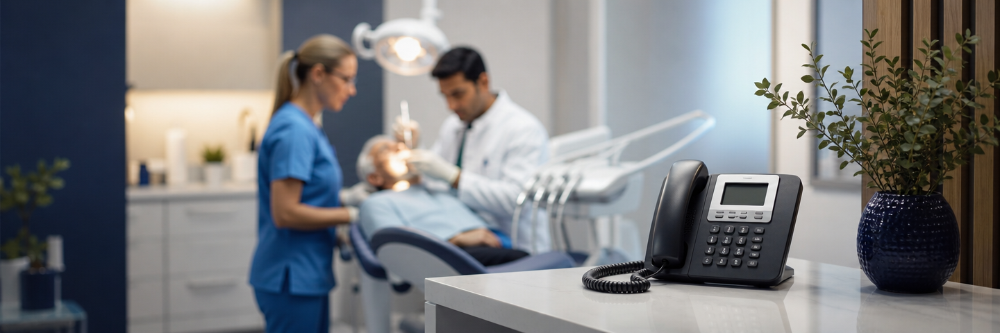
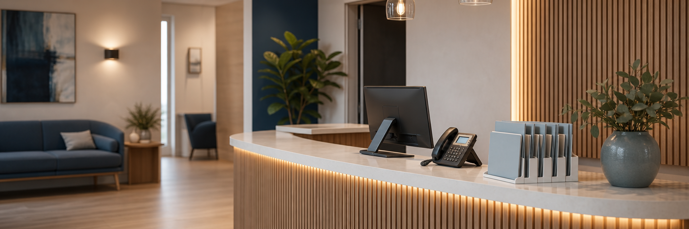

Meer nieuwe patiënten
Nieuwe patiënten worden direct geholpen en kunnen eenvoudig hun gegevens achterlaten.
Tijdens behandelingen kan uw team niet altijd opnemen. Opsio beantwoordt oproepen, registreert nieuwe patiënten en helpt patiënten verder wanneer uw team daar geen tijd voor heeft.

Wanneer een praktijk niet opneemt, bellen veel patiënten simpelweg de volgende praktijk. Telefonische bereikbaarheid blijft een belangrijke factor bij het kiezen van een zorgverlener. Opsio zorgt ervoor dat iedere oproep wordt aangenomen, ook tijdens behandelingen, pauzes en buiten openingstijden.
Nieuwe patiënten worden direct geholpen en kunnen eenvoudig hun gegevens achterlaten.
Uw team hoeft behandelingen minder vaak te onderbreken om telefoongesprekken aan te nemen.
Patiënten kunnen altijd contact opnemen, ook wanneer de praktijk gesloten is.
Zo lang willen nieuwe patiënten gemiddeld maximaal in de wacht staan bij een artsenpraktijk.
Kan leiden tot verlies van een potentiële patiënt.
Bereikbaarheid sluit aan op de groeiende behoefte aan toegang buiten kantooruren.
Broncontext: Talker Research voor Klara/ModMed, onderzoek onder 2.000 Amerikaanse zorgconsumenten (2025). De cijfers zijn indicatief en niet specifiek voor Nederlandse tandartspraktijken.

Opsio helpt bij veelvoorkomende telefoongesprekken zoals: